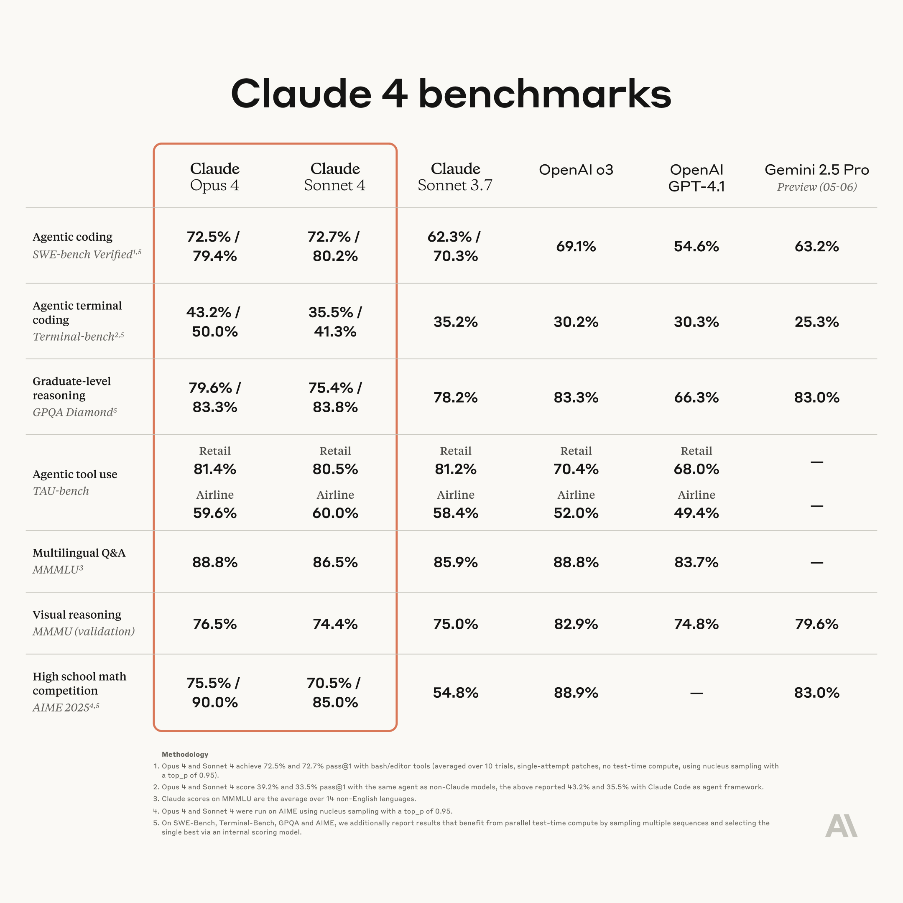

调研目标
将 Benchmark 视作需求，弄清楚如何从需求中搭建环境，如何设计 Reward 等等……算法是重要的，但 researcher is engineer，搞明白训练框架 / RL 全栈也很重要。

-Bench
- 定位 ：通过模拟用户与智能体的对话，基于 “Database”，“Function Calling” 以及 “Policy” 的两类场景（Retail & Airport）下的任务，测试模型调用工具，和人类交互，解决实际问题的能力。
- 优势 ：1）确实够痛点，而且切中大模型发展的 key need；2）但另一方面，with advance of LMs，也是发展的 nature need；3）搭建场景（env），构造 entities（LM），对 Benchmark 的数据 verify ，这套构筑流程很自然；
- 评估 ：基于最终数据库与预期结果的一致性以及智能体对用户响应的信息完整性计算（output-based）；提出了一个
pass^k的指标，用以衡量一次任务重复 k 次的一致性。 - 缺点 ：1）场景太少，not general；2）用户模拟不够真实；
-Bench
- 定位 ：主要是解决第二个缺点，通过设计一类新的动作（Telecom）允许用户和自己的环境/工具交互。这种“双控”模式使得评估更加真实，因为它测试了 Agent 在需要与用户协作时的沟通和协调能力。
- 优势 ：比起上一篇论文，还做了一些优化。1）在构造数据集的时候，先构造一批原子的 subtask，通过将不同的子任务组合连接，构造复杂的复合任务；这样的好处是更容易验证结果是否可以唯一由任务导致。2）用户也可以操作自己的环境，需要和自己的环境交互，相较于完全由 agent 操作，会造成 performance 下降（但感觉是用户的问题；
- 缺点 ：我觉得最大的问题一直是领域不 general，扩展基准测试的覆盖范围（即创建新的业务领域）仍然依赖于人类专家参与。为了让这类基准测试方法被行业广泛采纳，未来需要进一步研究如何自动化领域的创建过程。
SWE-Bench
参考：SWE-Bench：如何构造 LLM 时代的优秀 Benchmark - 知乎
-
定位 ：解决现实世界 Github Issues。
-
优势 ：1）贵在真实，真的是从 github Issue 直接掏出来鲜活的数据，非常有价值；2）难，一个 Benchmark 如果在放出来的时候就能让人刷到80多90多，那没有人是愿意去刷这个榜的。3）易于评估，这是我觉得最重要的，如果把 benchmark 视为产品，第一重要的是产品曝光度，第二是要让用户好上手。
假设要在 25 年的上半年发布一个很难的 benchmark，应该做出预期，让 25 年年中的 SOTA model 的水平只能得到 10 分以下，而现在的 SOTA model 只能得到 1 分左右。否则很有可能 benchmark 发布的一瞬间就被那时候的 SOTA model 秒了，也即 die at release。
面向 Github 构造数据，问题不在于数据太少，而是太多太杂太乱。作者选择了 12 个大项目，大概初始有 90000 PR。这些项目至少是维护完善，有清晰的 contribution guide 并且测试覆盖不错的。以 PR 后的 test cases 为基础，要求 Pre PR 的至少要错一个，然后 Post PR 的至少有一个 fail-to-pass。把这些 Issues 筛出来，最后剩下 2294 个。但这些 Issues 大多数都是在几千个文件的 framework 下得改动数个文件才行。对于 23 年的大模型来说还是有点太困难了。当年最牛的模型 Cluade 3 只能做对 3.79% 的题，现在 Claude 4 已经能做对 67% 了。
为了 Train SWE-Llama，前文提到过，把整个 repo 塞进去既不现实，也不必要。塞什么到 context window 里面，得做 retrieve。作者做了两种 retrive，一个是 Spare Retrival，用 BM25 在整个 repo 上搜索和 issue 相关的 files，然后尽可能多的塞给 model。另一种是 Oracle Retrival，这个名字很玄幻，但是大意是说，直接在原本 PR 里面修改过的那些 file 做 retrieve，相当于直接在正确答案上找 context 了。
Terminal-Bench
Terminal-Bench 是一个框架和一组任务，用于评估 AI 代理 在终端环境中完成复杂任务的能力 。任务示例包括：1）编译和打包代码存储库；2）下载数据集并训练分类器；3）设置服务器；4）其实还有乱七八糟的编程竞赛-like的题目。
Terminal-Bench 由两部分组成：任务数据集和执行工具。Terminal-Bench 中的每个任务包括：英文描述、Docker 环境、用于验证代理是否成功完成任务的测试脚本、以及解决任务的参考（“Oracle”）解决方案。
怎么说呢，看了几个例子，会在想有些完全是 cat > testl.py << 'EOF' 这种的符不符合在 CLI 解决问题的定义，但是题目都挺好的，这种开源大家一起构建 Benchmark 的思路也挺开放。就是不知道有多少人是作为素人加入的。
Discussion
调研就这些，但 core problem 是假设我要刷这些 Benchmark，应该怎么搭建环境和 API？怎么搭建 Scaffold？怎么设计 Reward？之后都是改框架的故事了。
在强化学习 (Reinforcement Learning) 中的 Scaffold：在强化学习中，智能体（Agent）需要在复杂的环境中通过试错来学习最优策略，这通常非常困难，尤其是在奖励稀疏（Sparse Rewards）的环境中。Scaffold 的目的就是让“学习”这件事本身变得更容易。在训练初期，为智能体提供人类专家的操作演示数据。智能体先通过模仿学习来快速达到一个不错的基线水平，然后再通过自身的探索去超越这个基线。专家的演示就是“脚手架”。
KIMI K2 （数据阶段）
为了让模型学习复杂的工具使用和交互式推理能力，KIMI K2 团队建立了一个大规模的智能体数据合成流水线用以 SFT，用以模拟真实世界的工具使用场景，生成了数万个高质量的训练样本。该流程主要分为三个阶段：
1）工具规范生成 (Tool Spec Generation)：首先，团队构建了一个全面的工具库。这个库不仅包含了从 GitHub 等平台收集的 3000 多个真实世界的工具 (MCP tools)，还通过一个分层的领域生成过程，系统性地进化出了超过 20000 个覆盖金融交易、软件应用、机器人控制等领域的合成工具。
2）智能体与任务生成 (Agent and Task Generation)：接着，为工具库中的不同工具组合生成了数千个具有不同能力、专业领域和行为模式的智能体。同时，为每个智能体配置了从简单到复杂不等的任务，并为每个任务都配有明确的成功标准和评估检查点 (Rubric) 。
3）轨迹生成 (Trajectory Generation)：最后，通过一个多智能体系统来生成智能体完成任务的轨迹。该系统包含：i) Simulated User（模拟用户）由大语言模型扮演具有不同沟通风格的用户，与智能体进行多轮对话； ii) 工具执行环境：一个复杂的工具模拟器，负责执行工具调用并提供包括成功、部分失败和边缘案例在内的真实反馈；iii) 质量评估与过滤：一个基于大语言模型的“裁判”智能体，根据任务的评估标准来判断轨迹是否成功，只有成功的轨迹才会被用于训练；
此外，为了弥补模拟环境与现实世界的差距，团队还引入了真实的执行沙箱（尤其是在编码和软件工程任务中），确保模型能从真实世界的执行反馈中强化学习：
1）大规模沙箱基础设施和真实数据：为了安全、可扩展地执行模型生成的代码，团队搭建了一个由 Kubernetes 驱动的强大沙箱基础设施 。该系统可以支持超过 10,000 个并发的沙箱实例稳定运行，确保了大规模强化学习的可行性。并且团队从 GitHub 收集了大量的真实世界软件工程任务，例如用户提交的 Issue（问题）和 Pull Request（代码合并请求）。这使得模型的训练目标与实际开发场景高度一致（其实也是和 SWE-Bench 对齐）。
2）可验证的奖励信号：单拎出来讲几个我比较感兴趣的点：对于每个软件工程任务（例如修复一个 Bug），环境中都包含了可执行的单元测试（Unit Tests），模型生成的代码会在沙箱环境中被实际执行，并通过这些单元测试进行检验 。奖励信号直接与客观指标挂钩，例如单元测试的通过率。
3）行为规范：为了让智能体更高效，团队还引入了“预算控制”机制 。如果模型生成的解决方案（代码）超过了预设的长度限制，会被截断并给予惩罚。这激励模型学会在指定的限制内生成更简洁、高效的解决方案。
其实可以说使用工具的能力（or 知识？）主要来源于 SFT 阶段，RL 阶段更像是利用这些工具培养 SE 的能力。 还有几个我比较感兴趣的点：
系统性地“进化”出合成工具
这指的是一种分层、由总到分的流程，用于创造大量多样化的模拟工具，以确保模型在训练中能接触到尽可能广泛的工具使用场景 1。这个过程不仅仅是随机生成，而是遵循一个系统性的结构：
-
从关键类别开始：团队首先定义了一些宏观的核心类别，例如“金融交易”、“软件应用”或“机器人控制”
-
“进化”出具体应用领域：在每个核心类别下，再衍生出多个更具体的应用领域。例如，在“金融交易”类别下，可以进化出“股票分析”、“期权交易”、“投资组合管理”等具体领域.
-
为领域合成专用工具：最后，针对每一个具体的应用领域，合成专门的工具。这些工具都带有清晰的接口、功能描述和操作语义，以便模型能够理解和调用。例如，在“股票分析”领域下，可以合成
getStockPrice、getHistoricalData、calculateMovingAverage等工具。
通过这种从上至下的“进化”过程，团队系统性地生成了超过 20,000 个合成工具，与从真实世界收集的 3000 多个工具相结合，构建了一个覆盖范围极广的工具库，为后续生成多样化的训练任务打下了基础。
评估轨迹生成的正确性
为了确保合成数据的质量，Kimi K2 团队建立了一套严格的、自动化的评估和过滤机制，其核心可以理解为“先立规矩，再裁判”的流程。整个流程是一个多智能体协作的流水线，用于生成和过滤智能体的行为轨迹。评估正确性的具体步骤如下：
-
预设评估标准 (Rubric)：在生成任何任务时，不仅仅是生成任务本身，还会为每个任务配备一个明确的评估标准（Rubric）。这个标准非常详细，规定了任务的成功条件、预期的工具使用模式以及评估的关键检查点 10。这相当于在考试前就制定好了详细的评分标准。
-
裁判”智能体进行评估：当一个“考生”智能体（Agent）与工具模拟器（Tool Simulator）交互完成任务后，会生成一条完整的行为轨迹。此时，一个专门的、基于大语言模型的“裁判”智能体（Judge Agent）会登场 12。它的唯一工作就是将“考生”智能体的行为轨迹与预设的评估标准（Rubric）进行比对 13。
-
严格过滤与筛选：只有那些被“裁判”智能体判定为完全符合成功标准的轨迹才会被保留下来，用于模型的最终训练，任何不满足成功标准的轨迹都会被丢弃 1515。
这个过程本质上是一种大规模的拒绝采样 (rejection sampling)。团队通过自动化流程生成海量的潜在轨迹，然后利用严格的“裁判”机制拒绝掉所有不合格的样本，最终只保留那些经过验证、高质量、可信赖的成功案例。这确保了用于训练的数据不仅多样，而且在逻辑上是正确和可靠的。
KIMI K2（训练阶段）
训练方法：结合可验证奖励与自我批判的强化学习
Kimi K2 在后训练 (Post-training) 阶段大规模应用了强化学习 (RL) 。团队开发了一个可扩展的强化学习框架，该框架不仅涵盖了具有可验证奖励的任务，还创新性地引入了自我批判奖励机制，以处理更主观、开放的任务 。
-
可验证奖励的强化学习 (RL with Verifiable Rewards)：
- 编码与软件工程：团队收集了大量来自开源数据集和合成来源的编程竞赛题目，并利用预训练数据中的高质量单元测试来确保奖励信号的正确性 。此外，还利用 GitHub 上的拉取请求 (pull requests) 和问题 (issues) 构建了一个包含用户提示和可执行单元测试的软件开发环境 。
- 数学、STEM 和逻辑任务：收集了大量高质量问答对，并确保其覆盖范围广泛且难度适中。
-
自我批判奖励机制 (RL with Self-Critique Reward)：对于没有明确正确答案的开放域任务（如创意写作），模型会自我评估其生成的多个回答，并根据一系列核心准则（如清晰度、相关性、对话流畅性等）和预设规则进行排序，从而产生偏好信号用于强化学习 。这种机制使得模型能够将从可验证任务中学到的能力泛化到更广泛的主观任务中。
-
智能体部署优化 (Agentic Rollout)：在强化学习的基础设施中，团队专门针对长程、多轮的智能体任务进行了优化，例如将复杂的环境部署为独立服务，并通过大量并发部署来分摊延迟，以最大化 GPU 利用率 。
架构适配：为智能体任务优化长上下文处理。 虽然模型架构没有专门为 Agent 设计新的模块，但在参数选择上考虑了智能体应用的需求。智能体应用通常需要高效的长上下文处理能力 。因此，Kimi K2 团队在设计时，选择将注意力头的数量减少到 64 个（作为对比，DeepSeek-V3 为 128 个）。实验表明，虽然增加注意力头数量能带来微小的性能提升（约 0.5% 至 1.2%），但这会导致在长序列（如128k）下的推理开销大幅增加（增加 83%）。为了平衡性能和智能体应用中的长上下文推理成本，团队最终选择了较少的注意力头数量 。
GLM 4.5
- 中训练 (Mid-training) 阶段：模型加入了大规模的合成 Agent 轨迹数据 (Large-scale synthetic agent trajectories) ，中训练我觉得本质上就是学习率变小，把语料变得更专业的 CPT 阶段，还是自监督学习的范畴。
- 监督微调 (SFT) 阶段 ：搭建了一个四步骤的自动 Agentic 合成数据 Pipeline：1）收集了一系列 Agentic 框架和真实的工具 API ；2）基于这些框架和工具，利用大语言模型自动生成相关的 Agent 任务查询；3）使用现有的大语言模型为合成的任务生成工具调用轨迹；4）多 Judge Agents 评估任务完成情况，只保留成功的轨迹。
- Agentic RL 阶段 ：1）应用场景 重点关注网页搜索和代码生成等可以自动检查每个动作或答案的 Agentic 场景 (verifiable)，2）奖励机制 对于网页搜索任务，使用最终答案的准确性作为整个 Agent 轨迹的奖励。同时，应用 格式惩罚 (process format penalty)，如果模型未能生成正确的工具调用格式，则该轨迹将获得零奖励。3）迭代蒸馏：采用自蒸馏方法，在对初始模型进行强化学习训练后，用其生成的响应替换原始的冷启动数据，从而 train 一个更优的 SFT 模型，在此基础上继续进行 RL 训练。
- 函数调用强化学习 (Function Calling RL) ：1）逐步的基于规则的强化学习：对于有明确工具调用程序的任务，模型被训练以生成下一步的函数调用或用户响应，并使用基于规则的严格奖励函数来引导模型进行正确的函数调用；2）端到端的多轮强化学习：模型首先生成完整的轨迹，然后根据任务完成情况获得奖励 。
Multi-turn RL Training (TIR)
Reward Hacking
先列一些论文在这里，额之后有机会再看：
-
在GRPO框架中，LLM可以作为“奖励生成器”（Reward Generator）或“奖励评估器”（Reward Evaluator），用于动态生成或评估奖励信号。例如，LLM可以被训练为一个“奖励模型”（Reward Model），通过输入智能体的行为序列，输出一个奖励分数。
然而，这类方法面临的主要挑战包括：
- 奖励信号的可解释性差：LLM生成的奖励信号可能难以解释，难以与任务目标对齐。
- 奖励Hacking风险：LLM生成的奖励信号可能被智能体“欺骗”或“滥用”，导致智能体通过操纵行为来获取奖励，而忽略任务目标。
- Reward Generation via Language Models. 通过LLM生成奖励信号.
- Group Reinforcement Learning with Language Models. 群体强化学习中的奖励生成与策略优化。
- Reward Hacking in Reinforcement Learning. 系统性地分析了奖励Hacking问题及其应对策略。
- Optimizing Safe and Aligned Language Generation: A Multi-Objective GRPO Approach. 在GRPO框架内，使用了一个多标签奖励回归模型。这个模型能够预测多个维度的对齐分数（例如，有用性、无害性、诚实性等），然后将这些分数组合成一个单一的奖励信号来指导GRPO训练。
- RRM: Robust Reward Model Training Mitigates Reward Hacking. Reward Hacking的根源在于奖励模型学到了许多与任务无关的虚假相关性（spurious correlations），例如文本长度、格式等。RRM通过 因果框架 和 数据增强 来迫使奖励模型关注真正与人类偏好相关的因果特征，而忽略这些虚假的上下文无关特征，从而训练出更鲁棒、不易被Hacking 的奖励模型。
- Inform: Mitigating Reward Hacking in RLHF via Information-theoretic Reward Modeling，通过信息论的视角来建模奖励，以减少模型对奖励函数本身的过度拟合
- Posterior-GRPO 提出了一种巧妙的解决方案来应对推理过程中的奖励操控。在代码生成等需要复杂推理链的任务中，如果仅奖励最终结果，则信号过于稀疏；如果奖励中间步骤，模型又可能学会生成看似合理但最终错误的过程。Posterior-GRPO 通过仅对那些最终产出正确结果的推理过程给予奖励，从而确保了过程奖励与最终目标的一致性，有效避免了模型“为了过程而过程”.
- **多层GRPO（Multi-Layer GRPO）**通过在一个单一模型内部引入一个双层处理流程，为解决问题提供了新的视角.
- GRPO-CARE. 标准GRPO虽然提升了答案准确率，但推理过程与答案的逻辑一致性却下降了。为此，它设计了一个双层奖励：一层奖励最终答案的正确性，另一层通过一个缓慢演变的参考模型来评估当前推理路径与答案的逻辑一致性，并给予奖励。这种设计迫使模型在追求正确答案的同时，也必须生成一个能够逻辑上支持该答案的连贯推理过程
参考资料：
My thinking
- 使用工具的能力（or 知识？）主要来源于 SFT 阶段，RL 阶段更像是利用这些工具培养解决实际问题的能力。
- 在合成这些 Agentic 数据时，搭建一个自动化的 Agent （或者说 LLM-based Workflow）去做批量生成是必要的（基于工具的任务生成->为解决任务的轨迹合成->基于 Judge Agent 的质量检测）。如果要做创新点的话，2,3步感觉都有做头（比如在不同场景下如何合成轨迹？没有可验证的回答如何质量检测？）
- RL 阶段反而比较统一？都是规则+最终结果的奖励机制。K2 虽然有自我批判的奖励机制，但本质上还是在开放域任务上才使用，能 RLVR 尽量 RLVR.